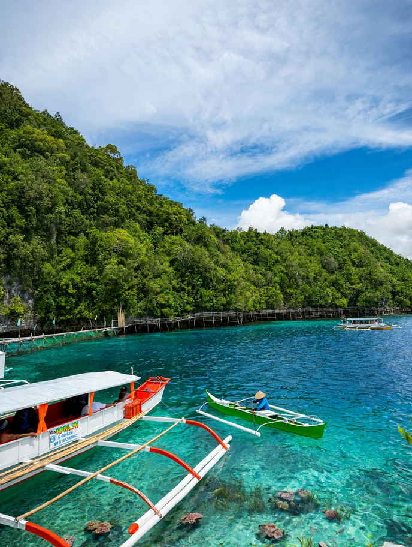

Dinagat Islands is the province most people sail past without noticing. It sits off the northern tip of Mindanao, across a 15-kilometre channel from Surigao City, and it gets a small share of the visitors who pour into Siargao a little further south. That is most of its appeal. The water around its limestone islets is the same shade of blue, the beaches rarely have more than a few families on them, and the towns still run on boat schedules and motorcycle rides rather than tour packages.
This guide covers what a first trip actually involves: the boat from Surigao, how long things take once you land, the places worth the effort, what to carry, and the months when the sea works for you or against you. Expect fewer conveniences than Siargao and plan around them, and Dinagat becomes an easy three or four days.
Some quick context. Dinagat Islands became its own province in 2006, split from Surigao del Norte, and belongs to the Caraga region. It covers about 1,036 square kilometres, has seven towns (San Jose, Basilisa, Cagdianao, Dinagat, Libjo, Loreto and Tubajon) and counted a little over 120,000 people in the 2024 census. San Jose is the capital and the place most travellers base themselves.

Is Dinagat Islands safe to visit?
For an ordinary holiday, yes. The province is one of the parts of Mindanao that foreign governments treat like the rest of the country. As of October 2026, the United States keeps Dinagat at its national Level 2 advice, and the UK and Australian advisories carve it out of their warnings for eastern Mindanao. Our guide to whether Mindanao is safe to travel explains how those labels compare across the region.
The bigger risk here is weather. Dinagat faces the Pacific side of Leyte Gulf, so it is often among the first places a typhoon reaches. Typhoon Odette in December 2021 and Typhoon Tino in November 2025 both hit the province hard. When a storm signal goes up, boats from Surigao stop, and you can lose a day or two waiting.
How to get to Dinagat Islands
Fly to Surigao or Butuan
Surigao City is the jumping-off point. Its small airport has limited flights, so many travellers land in Butuan instead, which has more routes, then take an air-conditioned van north to Surigao. Allow two to three hours for that road leg and aim to reach the port by late morning.
The boat from Surigao City
Boats leave from the Surigao City ferry terminal for San Jose Port, and some go to Cagdianao on the island's western side. The San Jose crossing takes roughly an hour and a half. One operator, Viels Shipping Line, listed a regular fare of ₱240 in September 2026, with discounts for seniors, persons with disabilities and children, plus possible fuel surcharges. Departures from Surigao run from early morning to early evening, with the busiest window before noon. Check the day's schedule at the terminal, because trips get cancelled or shifted when the sea turns.
Coming from Siargao
If Dinagat is an add-on to a Siargao trip, you can go back to Surigao by ferry and cross from there. There has also been a direct boat from Del Carmen on Siargao to Cagdianao, running once a day except Sundays in the early afternoon. Ask at the Del Carmen port the day before, since a single daily trip is easy to miss and can be suspended without much notice.
Getting around the islands
There are no jeepney networks or ride-hailing apps. On land, you move by habal-habal (a hired motorcycle with a driver) or a bao-bao, the small covered tricycle common in the province. Most island spots need a hired outrigger, which is cheapest when split among a group. Settle the price and the full list of stops before leaving, and agree on a return time for lagoons where boats drop you off and come back later.
Roads between towns can be narrow and slippery after rain, so travel times stretch. Treat the north of the island and the south as separate days rather than trying to cover both in one loop.
What to see in Dinagat Islands
Lake Bababu, Basilisa
The province's most unusual sight is a lake set in the hills above the sea. Its upper layer is fresh water, with salt water underneath, fed by an underwater cave that links it to the ocean. Reaching it means a boat ride and then a short but muddy hike of up to 30 minutes. There are no stores along the trail, so carry water and wear shoes with real grip.
Pangabangan Island Blue Lagoon, Libjo
This is the image most people have in mind when they search for Dinagat: a tidal pool ringed by karst walls, the water shifting from pale aqua to deep blue as the depth changes. Bamboo rafts and a floating cottage are usually available for rent, and some visitors camp overnight on the island. You will see people scrambling up the rock for a view over the lagoon. The limestone is sharp and steep, so skip that climb unless you are confident and wearing proper footwear.
Jelmar's Islet and Gaas Inlet, Libjo
Jelmar's Islet has a long boardwalk over the water and seafood places close by, which makes it an easy lunch stop on an island-hopping day. Also in Libjo, Gaas Inlet in Barangay Llamera is a quieter boat trip through mangroves and limestone, good in the early morning when birds are active.
Beaches
Tagbirayan Beach in Cagdianao has golden sand, cottages for rent and small stores nearby, and it fills up with local families on weekends. Bitaug Beach is another long-established favourite, with hammocks and kayaks at its resort. Expect simple facilities at both: cottage rentals, basic toilets and food you may need to bring yourself.
San Jose landmarks
In the capital, the provincial capitol is hard to miss, built on a ridge in the shape of a battleship. Islander's Castle, a large private structure, can only be viewed from outside its gates. The grounds of the Philippine Benevolent Missionaries Association (PBMA) are an active religious site, so dress modestly and follow any rules posted at the entrance.
Waterfalls and the bonsai forest
Inland, Paragamac Falls in Tubajon takes a motorcycle ride and a boat, about 45 minutes from the town centre. The pygmy bonsai forest, a stretch of stunted trees growing on nickel- and chromite-rich soil, needs a 4x4. Much of Dinagat's interior has been mined, and you will pass scarred hillsides on the way, which is part of the honest picture of the province.
Money, signal and where to stay
Bring enough cash for the whole trip. ATMs are few outside San Jose, and small resorts, boatmen and drivers rarely take cards or e-wallets. Mobile signal is generally fine in San Jose and the town centres but drops in coves and on the smaller islands. Brownouts happen in remote towns, so a power bank earns its space in the bag.
Accommodation is mostly homestays, tourist inns and small beach resorts. San Jose has the widest choice and the easiest access to boats, while Loreto, Cagdianao, Basilisa and Tubajon each have a handful of resorts. Message ahead, especially for weekends and holidays, as many places have only a few rooms. As a rough guide, a budget traveller sharing boats can spend around ₱1,500 to ₱2,500 a day; going solo pushes that up because you carry the full boat charter.
When to go
March to May gives the best odds of calm water and clear lagoons. The months from November to February bring the northeast monsoon and the stormiest part of the year to this coast, so crossings are more often cancelled. If you go then, leave a spare day at the end of the trip before any flight home.
A simple 3-day plan
Pack for open boats: dry bag, reef shoes, sunscreen, rain jacket and snacks. Our island-hopping safety checklist covers the rest. If you want more of the same karst-and-lagoon scenery nearby, Bucas Grande and Sohoton Cove lie just south of Siargao and pair well with a Dinagat trip.
Dinagat rewards people who keep the plan loose. Go with cash, a flexible return date and modest expectations of comfort, and you get clear water and quiet islands that the rest of Caraga's visitors mostly skip.


Comments
No comments yet. Been here recently? Share a tip or ask a question.
Leave a Reply